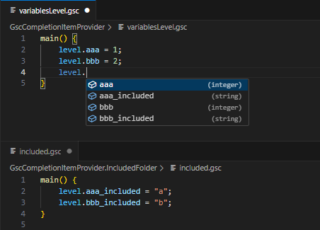
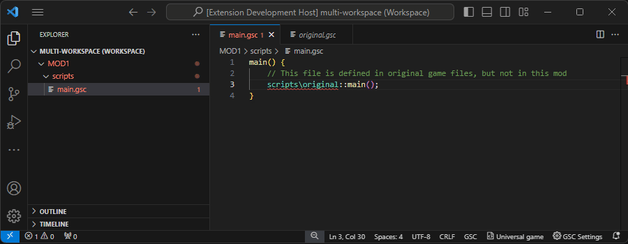
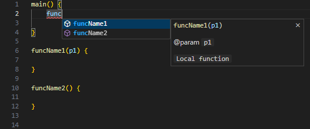
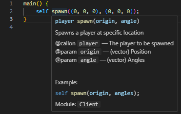

COD GSC Extension ${fromVersionToVersion}
Thank you for using this extension!
Below you can find the list of changes and improvements for each version.
⚠️ This extension is still in development. If you encounter any issues, please report them
Version [0.1.10] - 2024-09-22
Added support for foreach
Foreach syntax is now correctly recognized.
All changes:
- Added support for "foreach"
- Added error diagnostic if a file is included by itself via #include. Now it also does not consider - functions to be duplicated.
- Added error diagnostics if file is included twice or more via #include
- Improved debugging window of parsed files to show parsed data of selected range of text
- Improved tests so a few lines of source code is printed for all files in error stack for tests
- Fixed Github Actions .yml file - manual triggering allowed and if conditions wrapped into ${{ }}
Version [0.1.9] - 2024-09-21
- Fixed errors for file references on Linux systems
- Fixed unnecessary file parsing
- Improved exceptions handling
- Improved logging data into 'Output' tab
- Improved internal notifying of GscFiles
- Improved internal storage of diagnostics for files
- Updated README with list of all CoD games and their support status
Version [0.1.8] - 2024-09-15
- Fixed file path separator on linux system for GSC file path references
- Added CI for Github Actions (automated integration tests)
- Dependencies updated
Version [0.1.7] - 2024-09-15
Validation of #include paths
Added error diagnostics for invalid file path in '#include' directive.

Auto-suggestion for variables 'level' and 'game' from included workspace folders
Variables from included workspace folders are now available in auto-suggestion.

Order of the workspace folders
When other workspace folders are included for file references,
the order of how files are being searched is now determined by how the workspace folder appears in explorer tab.
The last folder is searched first.

All changes:
- Auto-suggestion for variables 'level' and 'game' now take included workspace folder into account
- Improved caching of parsed files
- Changed the order of how files are being searched in workspace when they get referenced - its sorted by how the workspace folder appears in explorer tab, the last folder is searched first
- Added error diagnostic for #include
- Added new debugging window to inspect the files
- Added log window into Output Channels
Version [0.1.6] - 2024-08-28
- Fixed missing file ./src/Updates.html in package
Version [0.1.5] - 2024-08-28
- Fixed missing package 'semver'
Version [0.1.4] - 2024-08-28
Included folders
Added ability to include workspace folders for external GSC files references.
Useful if your mod contains only part of the files and other files are in different folder.
You have to add these folders into your workspace setup to be able to include the folders.
If empty, each workspace folder is isolated from each other.

Added local and included functions into auto-suggestion
Local functions are now included in auto-suggestion.

Function included via '#include' are now included in auto-suggestion.

All changes:
- Added ability to include workspace folders for external GSC files references
- Added local and included functions into auto-suggestion
- Added settings to disable error diagnostics
- Improved hover over local functions
- Improved update change log popup window
- Fixed code action "Change game root folder to xxx" - it suggested folders from different workspace folders + it was able to use file instead of folder
- Fixed re-diagnosing files when file is moved to another folder
- Fixed automatic extension activation on startup - now the extension is activated when some GSC file is opened
- Fixed error message appearing when new folder is added into multi-root workspace
Version [0.1.3] - 2024-08-24
- Fixed error message appearing when new folder is created in workspace
Version [0.1.2] - 2024-08-24
- Added code action "Change game root folder to 'xxx'" - it will automatically detects if files are in deeper folder structure
- Fixed quick fix option "Ignore file xxx (workspace settings)"
- Updated all packages
Version [0.1.1] - 2024-08-24
- Fixed images in update notification window
Version [0.1.0] - 2024-08-24
Completion items (with CoD2 MP functions)
Currently supported games are CoD2 MP and CoD2 SP. There is also 'Universal game' that will show functions from all games

Hover over function name
Additional info is showed when hovering over function names

Status bar
Games can be changed in status bar. Optionally it can be changed in extension settings.

Code Actions
You can ignore error about missing files.

All changes:
- Added settings - game selection, game root folder, ignored file paths, ignored function names
- Added option in status bar to switch the game
- Added support for CoD2 MP + SP
- Added CoD2 MP + SP function definitions for auto-suggestion, hover a parameters error diagnostics
- Added warning message when build-in function is overwritten by local function
- Added code action provider to easily add file path into ignored list
- Added yellow status bar information indicating parsing and diagnosing tasks in background
- Added issue manual reporting
- Fixed case-sensitivity for file paths and function names
- Fixed structure & array auto-suggestion when written after keyword (e.g. 'wait level.xxx')
- Fixed re-diagnosing files when renamed, deleted or workspace folder changed
- Fixed handling GSC files outside of the workspace
Version [0.0.7] - 2024-06-23
All changes:
- Improved hover-over function names (colorization, warnings, case insensitive match)
Version [0.0.6] - 2024-06-22
All changes:
- Fixed hover-over function name case-sensitive error (functions are case insensitive)
- Fixed parsing error when double-quote does not have ending pair (a = "string;)
Version [0.0.5] - 2024-06-20
All changes:
- Improved error reporting of unexpected tokens / missing semicolon
- Added syntax support for casting (used in COD1)
- Fixed stack overflow error while parsing large files (caused by ...spread operator + recursive functions)
- Fixed developer block /##/ which can be used as regular scope
Version [0.0.4] - 2024-06-17
All changes:
- New GSC parser
- New analyzer
- New completion item provider
- New diagnostics provider
- New semantics provider
- New definition provider
- New hover provider
Version [0.0.3] - 2024-03-29
All changes:
- Added "HoverProvider" and "DefinitionProvider" that works with functions-
- Improved gsc syntax highlighting
Version [0.0.2] - 2024-03-28
All changes:
- Changed from "New Language Support" to "New Extension (TypeScript)" in 'yo code' template
- Basic syntax highlights of .gsc files
Version [0.0.1] - 2024-03-27
All changes:
- Initial release